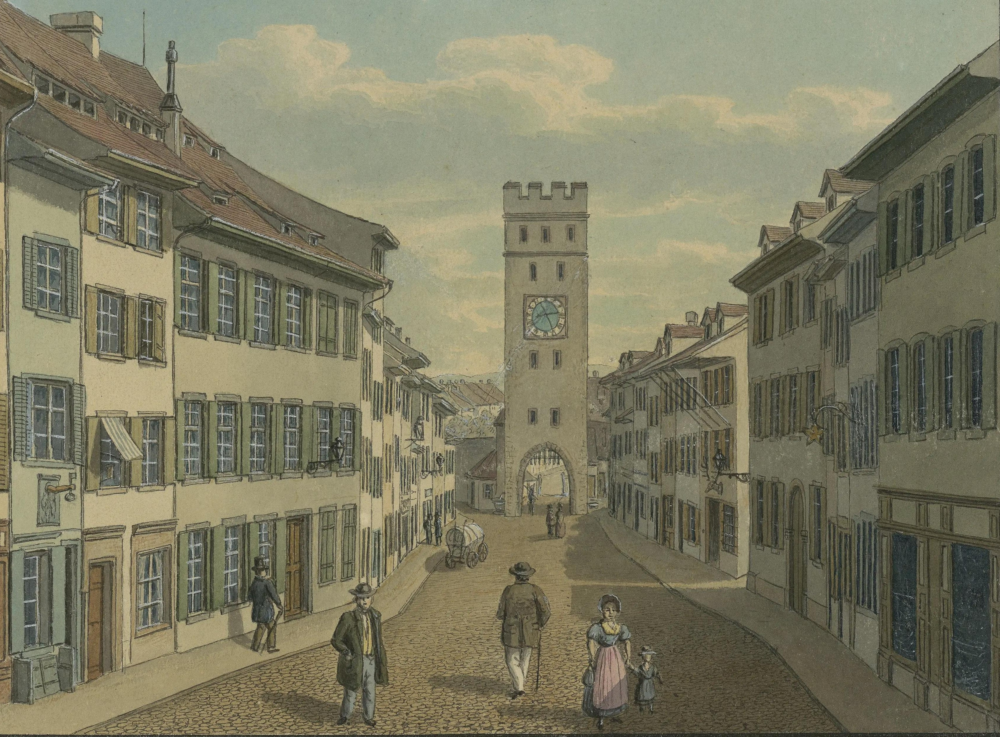

Das «Historisch-Genealogische Informationssystem Basel» (HISB) hat zum Ziel, die im Bürgerforschungsprojekt Basel-Spitalfriedhof (BBS) erschlossenen Personendaten in einem webbasierten Informationssystem der Forschung und der Öffentlichkeit zugänglich zu machen. Die zurzeit zugänglichen Daten umfassen die Personen der Basler Volkszählungen 1850 und 1860.
Dr. Gerhard Hotz, Projektverantwortlicher
Picture credit: Aquarelle reproduction of the Aeschentor (Gate of Aesch) in Basel, Switzerland. Source: Basler Staatsarchiv, Public Domain